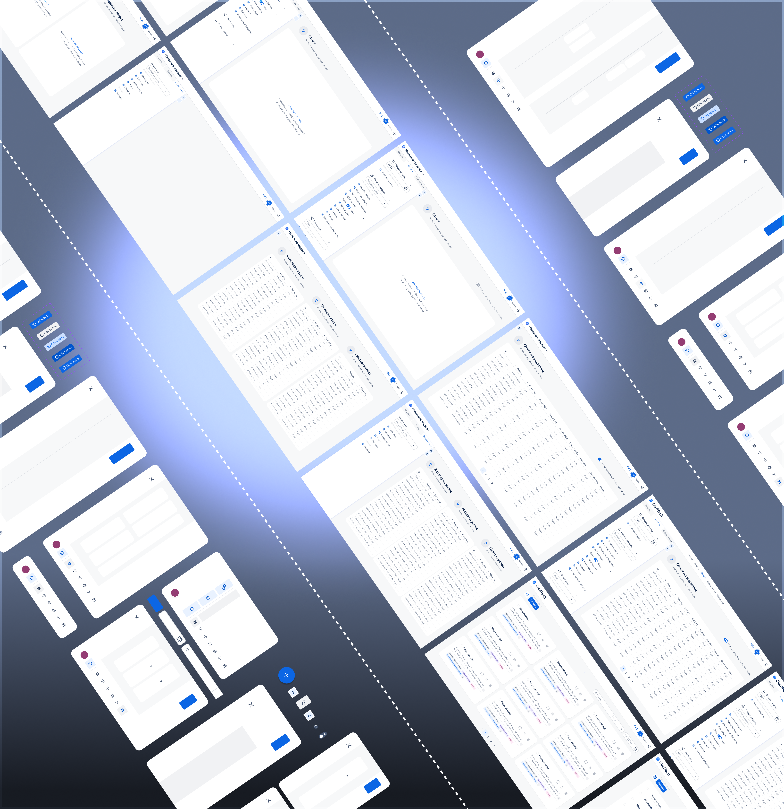

система управления затратами и финансового моделирования
 Общее описание
Общее описание
ClariTech — это специализированная информационная система для моделирования, анализа и управления затратами предприятия. Система предназначена для построения прозрачной финансовой модели организации, в которой отражаются источники расходов, правила их распределения и влияние затрат на продукты, проекты, услуги и подразделения. ClariTech позволяет перейти от разрозненных расчётов в таблицах к единой структурированной модели, основанной на причинно-следственных связях.
В основе ClariTech лежит графовый подход к финансовому моделированию. Система поддерживает загрузку данных из внешних источников, автоматический расчёт себестоимости, сценарный и план-факт анализ, а также выявление причин отклонений финансовых показателей.
ClariTech применяется как инструмент управленческого учёта и поддержки принятия решений. Он используется финансовыми службами и руководством для повышения прозрачности расходов, оценки эффективности деятельности, оптимизации затрат и обоснования управленческих решений. Система может работать как в облачном формате, так и в корпоративной ИТ-среде, дополняя ERP и BI-решения, но не заменяя их.
UI/UX редизайн платформы
Исходный интерфейс платформы формировался органически и со временем приобрёл большое количество повторяющихся и несогласованных паттернов, что существенно усложняло работу пользователей.
В результате интерфейс выглядел перегруженным, сложным для освоения и плохо масштабируемым.
В ходе редизайна был выполнен комплексный пересмотр UX-архитектуры с целью убрать повторяющиеся паттерны, упростить навигацию и сделать работу с моделями более прозрачной.
В результате платформа получила более чистую, логичную и масштабируемую UX-архитектуру, снизился когнитивный порог входа, а работа с моделями и узлами стала значительно быстрее и прозрачнее.
В рамках редизайна платформы была выполнена комплексная переработка UI-кита с целью унификации визуальных компонентов и улучшения пользовательского опыта. Все интерфейсные элементы были переработаны с учётом современных принципов дизайна и требований к доступности.
Параллельно с обновлением существующих компонентов была реализована разработка значительного количества новых функциональных разделов, которые ранее отсутствовали в системе. Среди созданных модулей были внедрены такие разделы, как «Отчеты» и «Справочники», которые расширили возможности платформы и улучшили структуру навигации.
Раздел «Отчеты» обеспечивает пользователям возможность генерации и экспорта аналитических данных, визуализации ключевых показателей и формирования документов для дальнейшего использования. Раздел «Справочники» предоставляет централизованный доступ к справочной информации, управление данными и настройку параметров системы.
Все новые разделы были интегрированы в общую архитектуру платформы с использованием обновлённого UI-кита, что обеспечило визуальную согласованность и единообразие интерфейса на всех уровнях системы.

UI/UX редизайн платформы